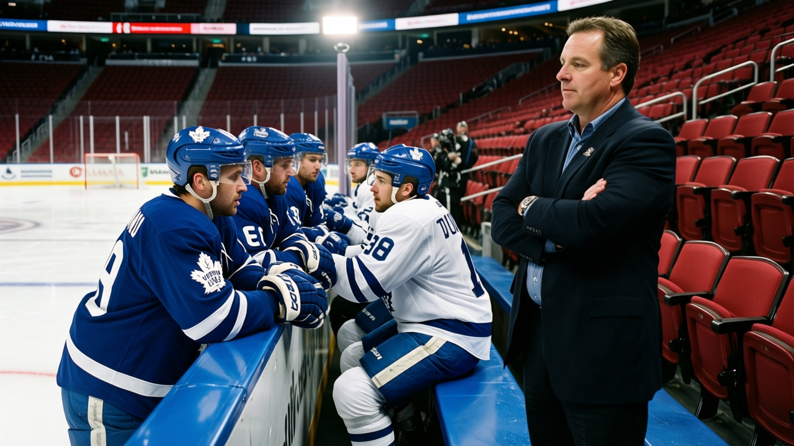

ATL
ATL DAL
DAL COL
COL BOS
BOS NYR
NYRDefending the Cup: the 14 is over, and the 50 is still there
A 7-3 loss in Atlanta does not change what Toronto has built. It changes how the room feels about it.
 Howard BlaineSenior writer, The Blaine Rankings · The Hockey Gazette
Howard BlaineSenior writer, The Blaine Rankings · The Hockey Gazette
The Cup champions are 50 points in 31 games. They were 50 points in 30 games. The difference is a 7-3 loss in Atlanta on Thursday, and the end of a winning streak that ran at least 14 games before the puck dropped in the Georgia dome. For the column, a loss and a tie cost the same: the 50 does not move either way. Toronto is still first in the East, still first in the league on goal differential, still the team that everybody else has to beat in April.
| Stat | Value |
|---|---|
| Record (through Thu) | 23-6-0, 50 pts |
| GF / GA | 186 / 93 (+93) |
| Home | 17-3 |
| Road | 8-3 |
| Payroll | $66.97M |
| Cost per point | $1.34M |
| Attendance | 17,467 |
| Tickets | $97 |
The +93 goal differential is 29 goals better than the second best in the league. That is a margin that does not close because of one ugly road loss. The road record was 8-3 before Atlanta. It is 8-4 now. The home record is 17-3, the best in the league. The attendance of 17,467 is the second highest in the league, behind only  Toronto Maple Leafs's own 17,467. The number is the same. That is the point: the building is full because the team is good, and the team is good because the building is full.
Toronto Maple Leafs's own 17,467. The number is the same. That is the point: the building is full because the team is good, and the team is good because the building is full.
The room does not count
Jiri Fischer told The Tunnel's Jan Kowalczyk last week, after the 7-1 win over Philadelphia, that nobody in the room counts. "We don't talk about fourteen," he said. "Nobody in the room, you know, nobody count. We talk about the next game." That is the correct answer, and it is the answer a Cup team gives. The alternative is to sit with what the number means: the streak was the story, and the streak is gone, and the 50 points are what is left.
 David Aebischer86, who has started 16 games and gone 12-3-1 with a 2.80 GAA and 1 shutout, gave the longer version of the same answer. "You win in December and nobody cares in April if you stop," he told The Tunnel. "So we just keep, we just ..." The sentence trails off because there is no point to make. The room keeps. The streak was the story. The 50 points are the record.
David Aebischer86, who has started 16 games and gone 12-3-1 with a 2.80 GAA and 1 shutout, gave the longer version of the same answer. "You win in December and nobody cares in April if you stop," he told The Tunnel. "So we just keep, we just ..." The sentence trails off because there is no point to make. The room keeps. The streak was the story. The 50 points are the record.
Brad Richards, who has 14 points in 31 games and is not the kind of player who needs the numbers to validate him, said the trip is the thing. "You get home at two, three in the morning, but you win, you sleep good, and the legs show up," he told The Tunnel after the 8-1 win over New Jersey on Dec 7. "It's a good feeling." The good feeling is what the 14-game streak was, and the 7-3 loss in Atlanta is the first night the good feeling did not come. The question is whether the good feeling comes back, and the answer, for a team that is 17-3 at home and 8-4 on the road, is that it will. The building in Toronto is full for a reason, and the reason is the 186 goals, not the streak.
The real test is January
Atlanta is 7-18-2. The 7-3 scoreline is the kind of game that happens when a team that is not good plays a team that is good, and the good team does not play well enough to make it look easy. The real test of Toronto's road record is not Atlanta. It is the January schedule: Boston, New York, New Jersey, all on the road, all against teams that are in the playoff picture and will play with the intensity of a team that knows it has to win to stay in. The 8-4 road record is good. It is not the 8-3 it was. The difference is one game, and one game is not a trend.
The Cup champions are 50 points in 31 games. That is a 132-point pace over 82, which is the best in the league. The Presidents' Trophy is a race to the best record, and Toronto is 5 points ahead of Dallas and 4 ahead of Colorado on a pace that will put them at 132 by April if it holds. It will not hold. No pace holds for 82 games. The question is not whether the pace holds. It is whether the 50 points become 100, and whether the 100 points are enough to be the team that wins the Cup again.
The standings at Christmas are the standings in April. I say that when it is true. For Toronto, the Christmas standings are 50 points, a +93 differential, and a 17-3 home record. The April question is whether those numbers are enough, and the answer is that they are enough to be in the playoffs, and they are enough to be the favourite at home, and they are not enough by themselves to win the Cup. The Cup requires something more than 50 points in December. It requires the 50 points in February, and the 50 points in March, and the 14 wins in April. The 14 is over. The other 14 have not started.